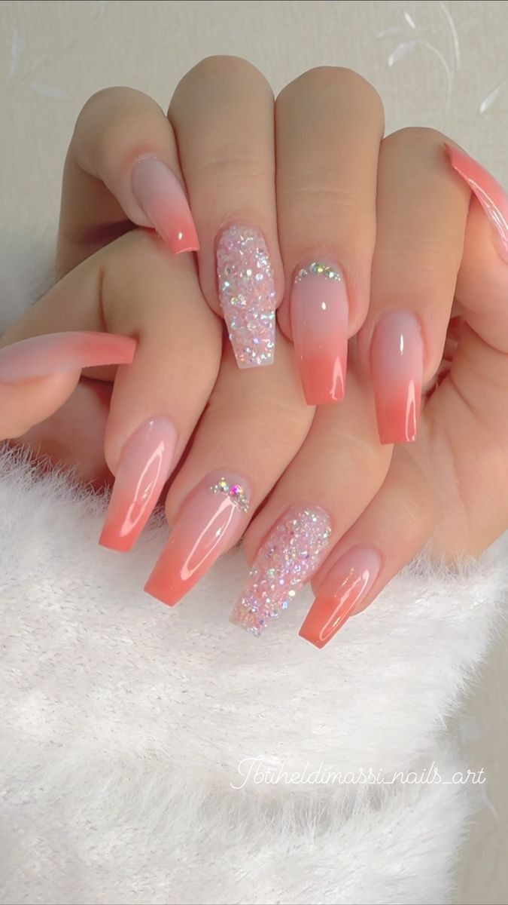

Spa de manicure y pedicura tradicional
Limpieza profunda, Corte, Limado, Tratamiento de cutículas, Exfoliación, Hidratación, Masajes en Manos/Pies y si lo deseas aplicacion de esmalte convencional:

Los servicios que ofrecemos por el momento son:
Limpieza profunda, Corte, Limado, Tratamiento de cutículas, Exfoliación, Hidratación, Masajes en Manos/Pies y si lo deseas aplicacion de esmalte convencional:

Aplicación de esmalte de larga duración (2-3 semanas) secado con lámpara UV/LED.:
Extensiones resistentes hechas con polvo y líquido monómero, ideales para diseños artísticos o corregir uñas quebradizas.
Un híbrido entre el gel y el acrílico que es más ligero y flexible, utilizado tanto para extensiones como para baños de fortalecimiento sobre la uña natural.
personalizacion visual de las uñas con diseños a mano alzada, efectos y decoracion